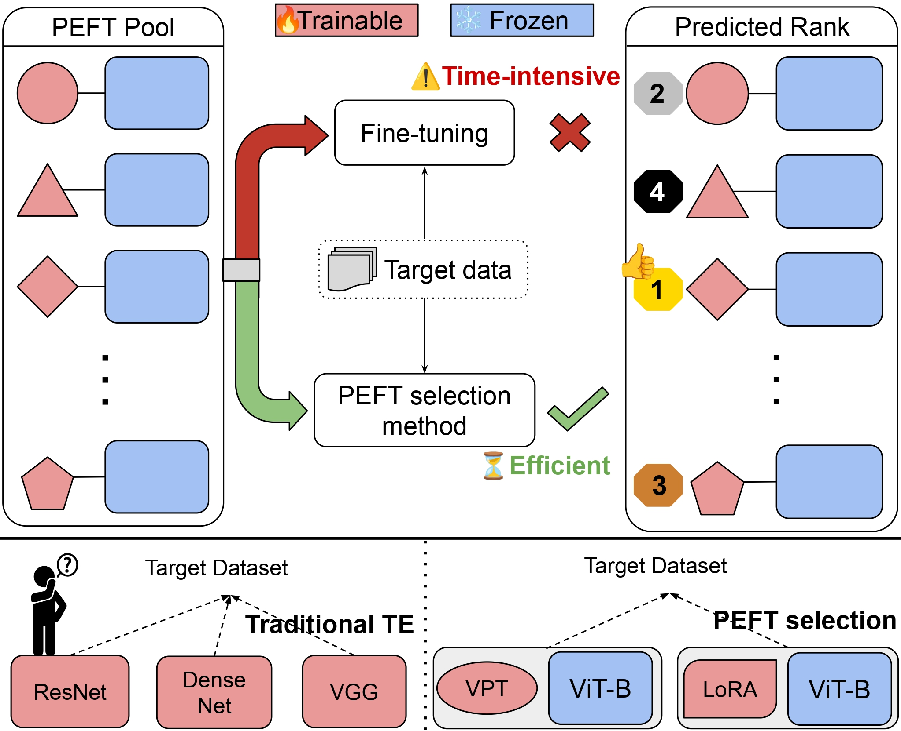

Selecting an optimal Parameter-Efficient Fine-Tuning (PEFT) technique for a downstream task is a fundamental challenge in transfer learning. Unlike full fine-tuning, where all model parameters are updated, PEFT techniques modify only a small subset of parameters while keeping the backbone frozen, making them computationally efficient. However, this introduces a unique problem: selecting the most effective PEFT method for a given dataset.
Existing transferability estimation metrics primarily focus on ranking distinct architectures and struggle to detect subtle embedding differences introduced by various PEFT methods sharing the same backbone. To address this limitation, we propose a diffusion-based metric designed specifically for PEFT selection. Our approach models fine-grained geometric relationships in embedding spaces via a diffusion process, quantifying intra-class compactness and inter-class separability. Experiments on VTAB-1k show improvements of 68.95% over LogME, 1297.29% over NLEEP, 149.75% over NCTI, and 140.46% over SFDA.